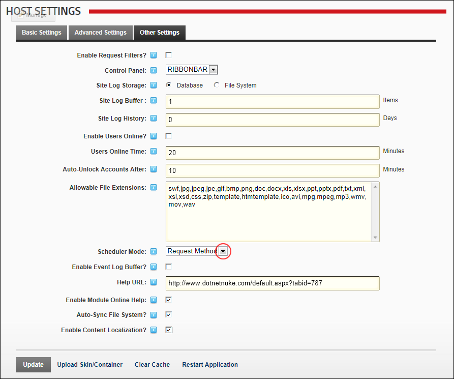

Enabling/Disabling the Scheduler
How to enable or disable the Scheduler on all sites and set the scheduler mode.
- Navigate to Host >
 Host Settings.
Host Settings.
- Select the Other Settings tab.
- At Scheduler Mode, select from the following:
- Disabled: Select to disable the scheduler.
- Timer Method: Select to enable the scheduler and maintain a separate thread to execute scheduled tasks while the worker process is alive.
- Request Method: Select to enable the scheduler and set scheduled tasks to run when page (HTTP) requests are made.

-
Click the Update button.
Related Topics:
-
See "About the Schedule Module"